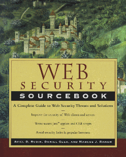

![[ TABLE OF CONTENTS ]](../gx/indexnew.gif)
![[ FRONT PAGE ]](../gx/homenew.gif)



Web Security Sourcebook claims to be "a serious security source book for Web Professionals and users." Each chapter covers one aspect of security, ranging from basic browser security to firewall design.
The material covered in Web Security Sourcebook is fairly simple--I would expect that any Linux user could easily understand everything presented in the book. The target audience for Web Security Sourcebook is anyone with some computer experience but with little knowledge of computer security. It is mostly a summary of beginning, and some intermediate, topics.
The first chapter, "Caught in Our Own Web", is the introduction to the book. The authors present a quick history of the Web split into four stages: the beginning, HTTP, server-side scripts and client-side scripts. Security features (authentication, confidentiality, etc.) are quickly outlined.
Chapter two, "Basic Browser Security", outlines the features of Netscape Navigator and Microsoft Internet Explorer. The authors cover all of the preferences that deal with security and comment on how they should be configured. A section on Internet Explorer's Content Advisor (basically a Web "ratings" system) is included.
The next chapter is mostly about user privacy. There is a section that describes certificates, mostly describing their flaws, a very brief section on passwords and a good description of cookies. Then the authors turn to privacy and anonymity. Simple proxies, Chaum mixes and anonymous remailers are also described.
Chapters four and five address the security concerns of client- and server-side scripts. Security issues of Java, Javascript and ActiveX are outlined. The section on server-side security covers system security as well as web-server security. It is mostly aimed at Unix users.
The next chapter, "Advanced Server-Side Security" consists mainly of CGI scripts and server-side includes. Information about code signing and auditing tools is also provided.
"Creating Secure CGI Scripts" is the name of chapter seven. It informs the reader of a few common security holes in CGI scripts. It also outlines Perl, Tcl and Python as three capable CGI scripting languages.
Chapter eight is an introduction to firewalls. The authors describe what firewalls can do and how they interact with various protocols. The placement of the firewall is explained in the second part of the chapter.
Chapters nine and ten outline transactions on the Web. IPSEC is discussed in detail. Secure HTTP, SSL and PCT are explained. The authors then explain several "digital money" standards. A good comparison is done between six of the competing standards.
The final chapter outlines the future of security on the Web. It explains the problem of building in security "after-the-fact". The authors point out some issues that often affect security, although they aren't always thought of in that sense (such as "deliberate incompatibility"). The chapter ends with a section titled "What we need in the future".
The book includes two appendices. The first one is a brief description of encryption, hash functions, digital signatures and so on. The second one is a list of all the books and URLs that the authors mentioned in the book.
Web Security Sourcebook is fairly light reading and can be finished quickly. The writing is adequate, although there are places where I found the descriptions lacking or imprecise.
One thing that I often find annoying about security-related writings is the use of scare tactics. Web Security Sourcebook does have its share of scare tactics, but for the most part uses realistic stories that honestly try to inform the reader.
The information that Web Security Sourcebook presents is useful although a bit shallow. The book tries to cover a lot of ground and is only 350 pages. If the book had been devoted solely to practical security fixes, it might have impressed me. However, it included only a few specifics and then went on to describe firewalls and transaction standards (which would also have been interesting in more detail).
If you want an introduction to Web security and you have very little experience with any sort of computer security, you might be interested in Web Security Sourcebook. If you know much about encryption, or have studied firewalls, or know about quite a few Web client and/or server security holes, you will probably be disappointed by this book.
If you want to learn everything that was covered in this book and you have the money, I would suggest getting a specific book on each of the three or four concepts that Web Security Sourcebook covers.